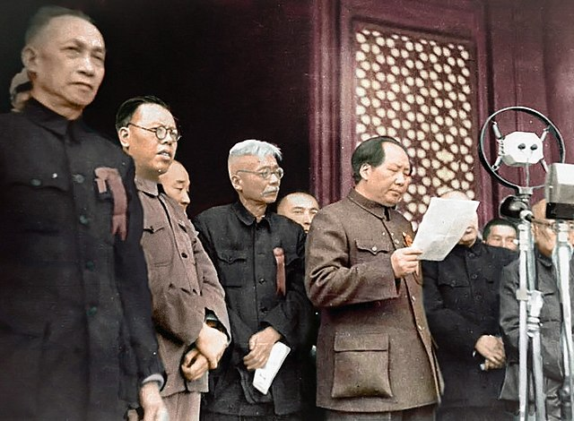
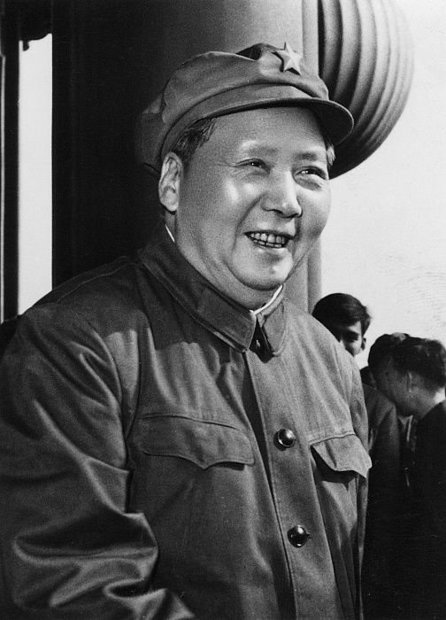

Home
Mao Archive
Mao Zedong

"The people, and the people alone, are the motive force in the making of world history."
-Mao Zedong

Born: 26 December 1893
Died: 9 September 1976
Led The Long March and was a significant figure in the Chinese Civil War
Founding member of the CPC
Expanded on Marixsm-Leninism and developed the idea of a protracted people's war